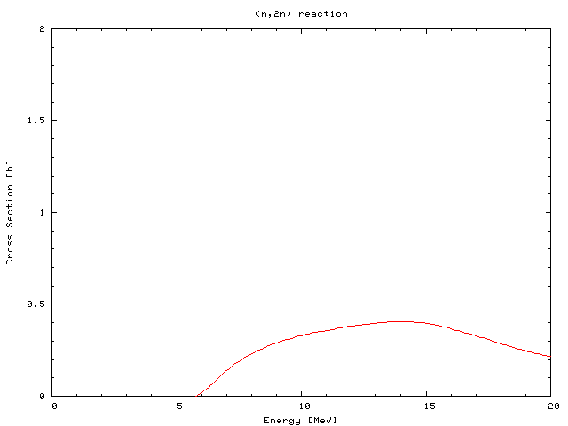
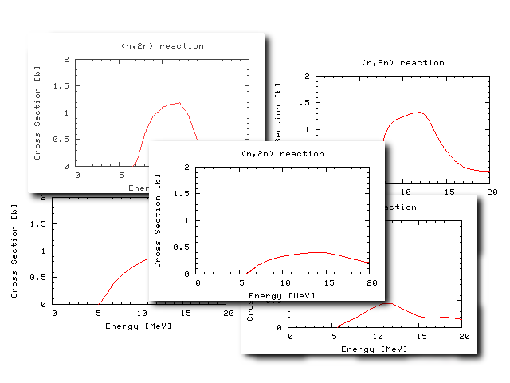

<!DOCTYPE HTML PUBLIC "-//W3C//DTD HTML 4.01 Transitional//EN">
<html lang="ja">
<head>
<title> gnuplot / intro / working </title>
<!-- Generated 1999/ 9/ 1 -->
<!-- $Id: working.html,v 1.13 2004/12/04 10:01:55 kawano Exp $ -->
<meta http-equiv="content-type" content="text/html;charset=iso-2022-jp">
<link rel="stylesheet" href="../style-new.css" type="text/css">
</head>
<body>

<table width="100%" border="0" cellpadding="0" cellspacing="0">
<tr><td bgcolor="#cccc90" width="320">
    <div align="left">
    <a href="../index.html">
    
    </a></div></td>
    <td bgcolor="#cccc90">
      <div align="center"><h3> - not so Frequently Asked Questions - </h3> </div>
      <div class="update"> update 2004/8/31 </div>
    </td>
</tr>
<tr><td bgcolor="#fae8ba"></td>
    <td bgcolor="#fae8ba"><div class="navi"> 
<a href="../index.html">          HOME </a> |
                                  INTRODUCTION |
<a href="../general.html">        INFORMATION </a> |
<a href="../gallery/index.html">  GALLERY </a> |
<a href="working-e.html">         ENGLISH </a>
</div></td></tr>
</table>
<hr class="topsep">


<table width="100%" border="0" cellpadding="0" cellspacing="0">
<tr><td id="menu">
 <p> <a href="index.html">   gnuplot$BF~Lg(B  </a></p>
 <ul>
  <li> <a href="basic.html">   $B4pK\$N4pK\JT(B  </a>
  <li> <a href="plotcalc.html">$B?tCM7W;;JT(B </a>
  <li> <a href="plotexp.html"> $B<B83%G!<%?JT(B </a>
  <li> <a href="plotfunc.html">$B4X?tI=<(JT(B </a>
  <li> <a href="working.html"> $B@83hJT(B </a>
    <ul>
     <li> <a href="working.html#batch">     $B:n6H$N%P%C%A2=(B </a>
     <li> <a href="working.html#many">      $B?^$NBgNL@8;:(B </a>
    </ul>
  <li> <a href="style.html">   $B%9%?%$%k0lMw(B </a>
 </ul>
</td>

<td id="content">


<h1><a name="top"> gnuplot $BF~Lg(B --- $B@83hJT(B </a></h1>
<div align="right"> <i> It's working ! <br> (Anakin, Tatooine)</i></div>


<h2><a name="batch">$B:n6H$N%P%C%A2=(B </a></h2>

<p> $B$3$3$G$O!$?tCM7W;;JT$N:G8e$KJ]B8$7$?%W%m%C%H%U%!%$%k(B
<a href="output.plt"> "output.plt" </a> $B$r;H$C$F!$!V$=$N8e!W$N;E;v$r3Z$K(B
$B$9$kJ}K!$r35@b$7$^$9!%$3$N%U%!%$%k$rGA$$$F$_$k$H!$:n6HCf$K@_Dj$7$?ItJ,(B
($B<4$NHO0O$d%W%m%C%H$9$k%U%!%$%kL>(B)$B$H!$$=$NB>$N%G%U%)%k%H$G@_Dj$5$l$F$$(B
$B$kItJ,$,:.:_$7$F$$$k$N$,J,$+$k$H;W$$$^$9!%$A$g$C$H8+$E$i$$$N$G!$%G%U%)(B
$B%k%H$G@_Dj$5$l$F$$$kItJ,$r>C$7$F!$<+J,$G@_Dj$7$?$b$N$@$1$r;D$7$F$_$^$7$g(B
$B$&!%C"$7!$(Btermianl$B$H(Bplot$B$NItJ,$OD9$/$J$j$9$.$k$N$G!$7QB39T5-9f(B(backslash)$B$r(B
$B;H$C$F@^$jJV$7$F$$$^$9!%(B</p>

<pre class="file">
#!/usr/local/bin/gnuplot -persist
# set terminal postscript landscape noenhanced monochrome \
#              dashed defaultplex "Helvetica" 14
# set output 'output.ps'
set xlabel "x" 0.000000,0.000000  ""
set ylabel "y=exp(-x)" 0.000000,0.000000  ""
set title "Pade approximation" 0.000000,0.000000  ""
set xrange [ 0 : 2 ] noreverse nowriteback
set yrange [ 0 : 1 ] noreverse nowriteback
set mxtics 5.000000
set mytics 5.000000
set xtics border mirror norotate 1
set ytics border mirror norotate 0.5
plot "output.dat" using 1:2 title "Analytical" w l, \
     "output.dat" using 1:3 title "L=1, M=2" w l, \
     "output.dat" using 1:4 title "L=2, M=1" w l
#    EOF
</pre>


<p>PostScript$B$K=PNO$9$kItJ,$O%3%a%s%H%"%&%H$5$l$F$$$^$9!%(Bgnuplot$B$r:F$S(B
$B5/F0$7!$$3$N%U%!%$%k$r(B<tt>load</tt>$B%3%^%s%I$GFI$_9~$a$P!$F1$8%0%i%U$r(B
$B$b$&0lEYIA$/$3$H$,$G$-$^$9!%$^$?!$?7$7$$7W;;7k2LEy$rF1$8%U%!%$%k(B($B$3$3(B
$B$G$O(Boutput.dat)$B$K=q$-9~$`$h$&$K$9$l$P!$7W;;7k2L$r7h$^$C$?%U%)!<%^%C%H$G(B
$B$9$0$K8+$k$3$H$,$G$-$FJXMx$G$9!%(B</p>

<pre class="sample">
gnuplot&gt; load "output.plt"
</pre>

<p>$BB>$K!$(Bgnuplot$B5/F0;~$K$3$N%U%!%$%kL>$r%*%W%7%g%s$H$7$FEO$9J}K!$,$"$j(B
$B$^$9$,!$$=$N$^$^$G$O%0%i%U$rI=<($7$?D>8e$K(Bgnuplot$B$,=*N;$7$F$7$^$$!$2h(B
$BLL$,$9$0$K>C$($F$7$^$$$^$9!%I=<($7$?2hLL$r;D$9$K$O!$>e$N%W%m%C%H%U%!%$(B
$B%k$N:G8e(B(plot$B%3%^%s%I$N8e(B)$B$K(B <tt> pause -1 </tt>$B$rF~$l$F$*$-$^$9!%$3$&(B
$B$9$k$H!$%j%?!<%s%-!<$,2!$5$l$k$^$G2hLLI=<($,;_$^$j$^$9!%(B</p>

<pre class="sample">
 % gnuplot output.plt
</pre>


<p>gnuplot$B$N2hLLI=<($r;D$9$b$&0l$D$NJ}K!$H$7$F!$5/F0;~$N%*%W%7%g%s$K(B
<tt>-persist</tt>$B$r$D$1$kJ}K!$,$"$j$^$9!%(Bgnuplot$B$=$N$b$N$O=*N;$7$^$9$,!$(B
$B2hLL$NI=<($O;D$C$?$^$^$K$J$j$^$9!%(B</p>

<pre class="sample">
 % gnuplot -persist output.plt
</pre>

<p>$B>e$N%W%m%C%H%U%!%$%k$NNc$r8+$k$H!$0l9TL\$K$3$N%*%W%7%g%s$,=q$+$l$F(B
$B$N$,$o$+$j$^$9!%(Bgnuplot$B$,=q$-=P$9%W%m%C%H%U%!%$%k$O!$<B9T2DG=$N5v2D$r(B
$BM?$($F$d$l$P!$%9%/%j%W%H$H$7$F$=$N$^$^<B9T$9$k$3$H$,$G$-$^$9!%(B</p>

<pre class="sample">
 % chmod +x  output.plt
 % ./output.plt
</pre>

<p>$B$J$*!$$3$NJ}K!$G$O!$2hLL$rJD$8$k$?$a$K(Bkill$B%3%^%s%I$d%&%#%s%I%&$N%/(B
$B%m!<%:%\%?%sEy$r;H$C$F%W%m%;%9$=$N$b$N$r;&$9I,MW$,$"$j$^$9$N$G!$2?EY$b(B
$B%W%m%C%H$r7+$jJV$9>l9g$O(B<tt> pause -1</tt>$B$r;H$&J}K!$,JXMx$G$7$g$&!%(B</p>

<p> $B%W%m%C%H%U%!%$%k$r(Bload$B$7D>$7$F!$:F$SBPOCE*$K%W%m%C%H:n6H$r?J$a$k;v$b(B
$B$G$-$^$9$,!$%U%!%$%k$,=PMh$?8e$G$O%P%C%A=hM}$K$h$k:n6H$NJ}$,8zN(E*$G$9!%(B
$B$^$:%U%!%$%k$N:G8e$K(B <tt> pause -1 </tt>$B$rF~$l$F$*$$$F!$(B</p>

<ul>
 <li> $B%W%m%C%H%U%!%$%k$r(BEditor$B$r;H$C$F=$@5$9$k(B
 <li> $B%W%m%C%H7k2L$r2hLL$G8+$k(B
</ul>

<p>$B$H$$$&:n6H$r7+$jJV$7$F!$K~B-$N$$$/%0%i%U$r:n$C$F$$$-$^$9!%(B
$B$^$?!$:G=*L\E*$,(BPostScript$B$G$"$l$P!$(B</p>

<ul>
 <li> $B%W%m%C%H%U%!%$%k$r=$@5$9$k(B
 <li> PostScript$B$K=PNO$9$k(B
 <li> PostScript$B%U%!%$%k$r(Bgv$BEy$G%W%l%S%e!<$9$k(B
</ul>

<p>$B$H$$$&:n6H$N7+$jJV$7$K$J$j$^$9!%$3$N>l9g$O!$>e$G$O%3%a%s%H%"%&%H$5$l(B
     $B$F$$$?(B<tt> set terminal postscript </tt>$B$H=PNO%U%!%$%kL>$r%W%m%C%H(B
     $B%U%!%$%k$K=q$$$F$*$-$^$9!%$^$?!$2hLL$K$OIA$+$l$J$$$N$G!$(B
     <tt>pause</tt>$B$rF~$l$kI,MW$O$"$j$^$;$s!%(B</p>


<div class="top"><a href="working.html#top"></a></div>
<h2><a name="many">$B?^$NBgNL@8;:(B </a></h2>

<p> $B8&5f3hF0$K(Bgnuplot$B$,FC$KJXMx$J$N$O!$=PMh>e$,$C$?%W%m%C%H%U%!%$%k$r(B
$B:FMxMQ$G$-$kE@$G$9!%8&5f$rB3$1$F$$$k$H!$OH$d<4L>$,A4$/F1$8$GCf$N?tCM$@(B
$B$1$,0[$J$C$F$$$k$h$&$J?^$r2?EY$bIA$+$J$1$l$P$J$i$J$$$3$H$,$"$j$^$9!%(B
gnuplot$B$J$i!$0l$D$N%W%m%C%H%U%!%$%k$r;H$$!$$=$NCf$NI=<($9$k%U%!%$%kL>(B
$B$NItJ,$@$1$rJQ99$9$k$3$H$G!$<!!9$HJL$N?^$r:n@.$9$k$3$H$,$G$-$^$9$N$G8z(B
$BN(E*$G$9!%$3$l$K$O!$(B<tt>plot "datafile"</tt>$B$N(B datafile$B$NItJ,$@$1$r=q(B
$B$-D>$7$F$bNI$$$7!$$"$k$$$O(Bdatafile$B$NCf?H$=$N$b$N$r?7$7$$%G!<%?$K>e=q$-(B
$B$7$F2?EY$b%W%m%C%H$r7+$jJV$9$3$H$b$G$-$^$9!%(B</p>

<p> gnuplot$B$N%P%C%A%b!<%I$OBgNL$N%G!<%?$r=hM}$9$k$H$-$KHs>o$KJXMx$G$9!%(B
$B%0%i%U$r:n$j$?$$%G!<%?$N?t$,B?$$$H$-!$;THN$N%0%i%U%=%U%H$r;H$$$J$,$i0l(B
$BKg0lKg?^$r:n$C$F$$$F$O!$$$$D$^$G7P$C$F$b;E;v$,=*$o$j$^$;$s(B($B4JC1$K$G$-(B
$B$k%=%U%H$b$"$k$+$b$7$l$^$;$s!%$3$N%Z!<%8$N:n<T$,CN$i$J$$$@$1$G$9(B)$B!%(B
gnuplot$B$H(BUNIX$B$N%3%^%s%I$rAH$_9g$o$;$F!$A4$F$N%G!<%?$r0l5$$K%0%i%U$K$9(B
$B$kJ}K!$r9M$^$9!%(B</p>

<p> $B$"$k%G%#%l%/%H%j$NCf$K!$(Bcalc1.dat, calc2.dat, calc3.dat $B$N$h$&$KHV(B
$B9f$,IU$$$?%G!<%?%U%!%$%k$,$?$/$5$sF~$C$F$$$k$H$7$^$9!%3F!9$N%G!<%?%U%!(B
$B%$%k$NCf?H$O!$(B(X,Y)$B$NAH$@$1$,=q$+$l$?C1=c$J?tCM%G!<%?$G$9!%$^$:!$(B<a
href="calc1.dat"> calc1.dat </a> $B$@$1$r$H$j$@$7$F!$$3$N?^$r:n@.$9$k%W%m%C%H%U%!(B
$B%$%k$r=q$-$^$9!%$3$3$G$O!$(B<a href="plotcalc.html">$B?tCM7W;;JT(B</a>$B$G9T$C(B
$B$?$h$&$K!$?^$NI=Bj!$<4L>!$(BXY$B$NHO0O!$L\@94V3V$@$1$r;XDj$7$^$9!%(B</p>


<pre class="file">
set terminal png
set output "calc1.png"
set xlabel "Energy [MeV]"
set ylabel "Cross Section [b]"
set title "(n,2n) reaction"
set xrange [ 0 : 20 ]
set yrange [ 0 : 2 ]
set mxtics 5
set mytics 5
set xtics 5
set ytics 0.5
plot "calc1.dat" using 1:2 notitle w l
</pre>

<p> $B$3$N%U%!%$%k(B <a href="data.plt"> data.plt </a>$B$r(Bgnuplot$B$K!V?)$o$9!W(B
$B$H(BPNG$B$N2hA|$,F1$8%G%#%l%/%H%j$K=PMh>e$,$j$^$9!%(BEPS$B$N%U%!%$%k$r:n$j$?$1(B
$B$l$P!$(B<tt> set terminal </tt>$B$G(BPostscript$B$r;XDj$7!$$"$H%U%!%$%kL>$r(B 
calc1.eps$BEy$KJQ99$7$^$9!%(B</p>

<pre class="sample">
 % gnuplot &lt; data.plt
</pre>

<div align="center"></div>


<p> $B$3$N%W%m%C%H%U%!%$%k$rB>$N%G!<%?$KN.MQ$9$kJ}K!$r9M$($^$9!%>e$G:n$C$?(B
     data.plt$B$G!$=q$-D>$5$J$$$H$$$1$J$$$N$O!$(B"calc1.dat"$B$H(B"calc1.png"$B$N(B2 
     $B$D$N%U%!%$%kL>$@$1$G$9!%;DG0$J$,$i(Bgnuplot$B$OJ8;zNsDj?t$r07$($J$$$N$G!$(B
     $B$3$l$i$rJQ?t$K$O$G$-$^$;$s!%$3$3$G$O(B<a href="working.html#sed">sed$B$r;H$C$F(Bcalc1
     $B$r(Bcalc2$B$KCV49$9$kJ}K!(B</a>$B$H!$%U%!%$%kL>$r(B<a href="working.html#heredoc">shell$B%9(B
     $B%/%j%W%H$N0z?t$H$7$F30It$+$iM?$($kJ}K!(B</a>$B$r>R2p$7$^$9!%(B</p>

<hr width="50%">

<p><a name="sed"> sed$B$r;H$C$F%U%!%$%k$N0lIt$rCV49$9$k$K$O!$<!$N$h$&$K$7$^$9!%(B</a></p>

<pre class="sample">
 % sed "s/calc1/calc2/g" data.plt | gnuplot
</pre>

<p> $B$?$C$?$3$l$@$1$G!$?7$7$$?^(Bcalc2.png$B$,=PMh>e$,$j$^$9!%$"$H$O$3$N:n(B
$B6H$rA4%G!<%?%U%!%$%k$KBP$7$F9T$&$@$1$G$9!%%G!<%?%U%!%$%k$N?t$,$"$^$jB?(B
$B$/$J$$$J$i!$%3%^%s%I%i%$%s$@$1$G:n6H$G$-$^$9!%(B</p>

<p> csh, tcsh</p>
<pre class="sample">
 % foreach i (calc2 calc3 calc4 cal5)
 foreach? sed "s/calc1/$i/g" data.plt | gnuplot
 foreach? end
</pre>

<p> sh, bash</p>
<pre class="sample">
 $ for i in calc2 calc3 calc4 cal5 ; do
 &gt; sed "s/calc1/$i/g" data.plt | gnuplot
 &gt; done
</pre>

<p> $B%G!<%?%U%!%$%k?t$,B?$$;~$O!$0J2<$N$h$&$K(Bsed$B$r;H$C$F!$(Bdat$B$H$$$&3HD%(B
$B;R$,IU$$$?%U%!%$%kL>$+$i3HD%;R0J30$NItJ,$@$1$r<h$j=P$7$F=hM}$7$^$9!%(B
$B%/%)!<%H$H%P%C%/%/%)!<%H$r4V0c$($J$$$h$&$K!%FbB&$N(Bsed$B$OJQ?t(B<i>$i</i>$B$K(B
$B$"$k(B".dat"$B$r>C$9ItJ,!$30B&$O$=$NJ8;zNs$G(B calc1 $B$rCV49$9$k$?$a$N$b$N$G(B
$B$9!%(B</p>

<pre class="sample">
 $ for i in *.dat ; do
 &gt; sed "s/calc1/`echo $i | sed "s/\.dat$//"`/g" data.plt | gnuplot
 &gt; done
</pre>

<p> $B?^$r0lKg$:$DIA$/(Bshell$B%9%/%j%W%H$r=q$/$3$H$b$G$-$^$9!%$3$A$i$NJ}$,!$(B
$B8e$G:FMxMQ$G$-$k$N$GJXMx$+$b$7$l$^$;$s!%%9%/%j%W%H$K$O!$>e$K$"$k$h$&$J(B
sed$B$GJQ49$7$J$,$i(Bgnuplot$B$KN.$79~$`9T$r!$%U%!%$%k$N?t$@$1JB$Y$l$PNI$$$N(B
$B$G$9$,!$(B</p>

<pre class="file">
#!/bin/sh
sed "s/calc1/calc2/g" data.plt | gnuplot
sed "s/calc1/calc3/g" data.plt | gnuplot
sed "s/calc1/calc4/g" data.plt | gnuplot
sed "s/calc1/calc5/g" data.plt | gnuplot
 ...
</pre>

<p> $B0J2<$N$h$&$K(B awk$B$r;H$C$F(B ls$B%3%^%s%I$N=PNO$r@07A$9$l$P!$$3$N%9%/%j(B
$B%W%H$r4JC1$K:n@.$9$k$3$H$,$G$-$^$9!%%9%/%j%W%H$N%U%!%$%k$r:n$k$K$O!$2<(B
$B$N%3%^%s%I$N<B9T7k2L$r%U%!%$%k$K%j%@%$%l%/%H$7$^$9(B($B%3%^%s%I(B <tt> &gt;
script.sh</tt>)$B!%(B</p>

<pre class="sample">
 % ls *.dat | awk '{printf("sed \"s/calc1/%s/g\" data.plt | gnuplot\n",$1)}'
</pre>

<br>
<hr width="50%">
<br>


<p><a name="heredoc"> $B%W%m%C%H%U%!%$%k$NJ8;zNs$rCV$-49$($k(B</a>$BJL$NJ}K!$H(B
 $B$7$F!$(Bshell$B%9%/%j%W%H$NCf$KD>@\(Bgnuplot$B$N%3%^%s%I$r=q$$$F$7$^$$!$$=$NCf(B
 $B$N%U%!%$%kL>$r(Bshell$B$NJQ?t$K$9$kJ}K!$b$"$j$^$9!%(Bgnuplot$B$N%3%^%s%I$r(Bshell
 $B%9%/%j%W%H$K=q$-9~$`$K$O!$0J2<$N$h$&$J(BHere Document$B$r;H$$$^$9!%:#EY$O%G!<(B
 $B%?%U%!%$%k(Bcalc1.dat$B$+$i!$(BEPS$B%U%!%$%k(B calc1.eps$B$r:n$C$F$_$^$7$g$&!%(B</p>

<pre class="file">
#!/bin/sh
gnuplot &lt;&lt; EOF
set terminal postscript eps color enhanced
set output "$1.eps"
set xlabel "Energy [MeV]"
set ylabel "Cross Section [b]"
set title "(n,2n) reaction"
set xrange [ 0 : 20 ]
set yrange [ 0 : 2 ]
set mxtics 5
set mytics 5
set xtics 5
set ytics 0.5
plot "$1.dat" using 1:2 notitle w l
EOF
</pre>

<p> $B8+$FJ,$+$k$h$&$K!$%G!<%?%U%!%$%k$H=PNO(BEPS$B%U%!%$%kL>$N3HD%;R$r=|$$$?(B
     $BItJ,$,!$JQ?t(B<i>$1</i> $B$KCV$-49$($i$l$F$$$^$9!%$3$NJQ?t$O%9%/%j%W%H(B 
     <a href="plot.sh">plot.sh</a>$B$N%3%^%s%I%i%$%s0z?t$H$7$FM?$($i$l$^$9(B
     $B$N$G!$2<$N$h$&$K%3%^%s%I%i%$%s$+$i<B9T$9$l$P!$(Bcalc1.dat$B$+$i(B
     calc1.eps $B$H$$$&?^$,$G$-$"$,$j$^$9!%$3$NJ}K!$J$i!$G$0U$N%G%#%l%/%H(B
     $B%j$K$"$k%G!<%?$r%W%m%C%H$7!$$=$N7k2L$rF1$8%G%#%l%/%H%j$N%U%!%$%k$H(B
     $B$7$F@8@.$9$k$3$H$,$G$-$^$9!%(B</p>

<pre class="sample">
 $ ./plot.sh calc1
</pre>

<p> $B%G!<%?%U%!%$%k$H(BEPS$B%U%!%$%k$NL>A0$rJQ$($k>l9g$O!$>e$N%9%/%j%W%H$NCf(B
     $B$K$"$k$I$A$i$+$N(B<i>$1</i>$B$r(B<i>$2</i>$B$H$7$F$*$-!$%3%^%s%I%i%$%s$G(B2$B$D(B
     $B$N0z?t$rM?$($^$9!%(B</p>

<p> $B$5$i$K<!$N$h$&$J(Bshell$B%9%/%j%W%H$d(Bforeach$B$J$I$rMQ$$$l$P!$>e$NNc$HF1MM(B
     $B$J?^$NBgNL@8;:$,2DG=$K$J$j$^$9!%(B</p>

<pre class="file">
#!/bin/sh
./plot.sh  calc1
./plot.sh  calc2
./plot.sh  calc3
./plot.sh  calc4
 ...
</pre>
<div align="right"><i> from Dr. Sato. Thanks !</i></div>


<div align="center"></div>


<div class="top"><a href="working.html#top"></a></div>
</td></tr></table>
<hr class="topsep">

</body>
</html>

